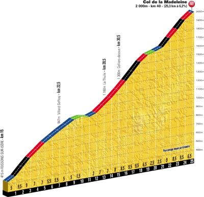
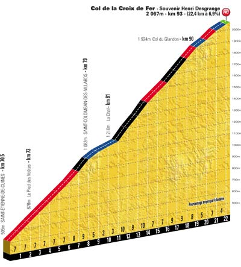
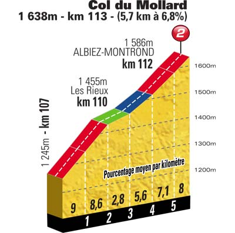
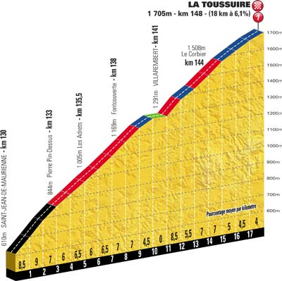

- Km 40.0 - Col de la Madeleine (2 000 m) - 25.3 km de montée à 6.2 % - Catégorie H
- Km 93.0 - Col de la Croix de Fer (2 067 m) - 22.4 km de montée à 6.9 % - Catégorie H
- Km 113.0 - Col du Mollard (1 638 m) - 5.7 km de montée à 6.8 % - Catégorie 2
- Km 148.0 - LA TOUSSUIRE - 18.0 km de montée à 6.1 % - Catégorie 1




|